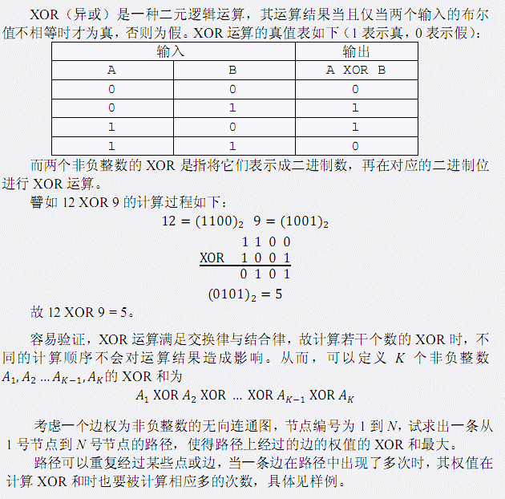
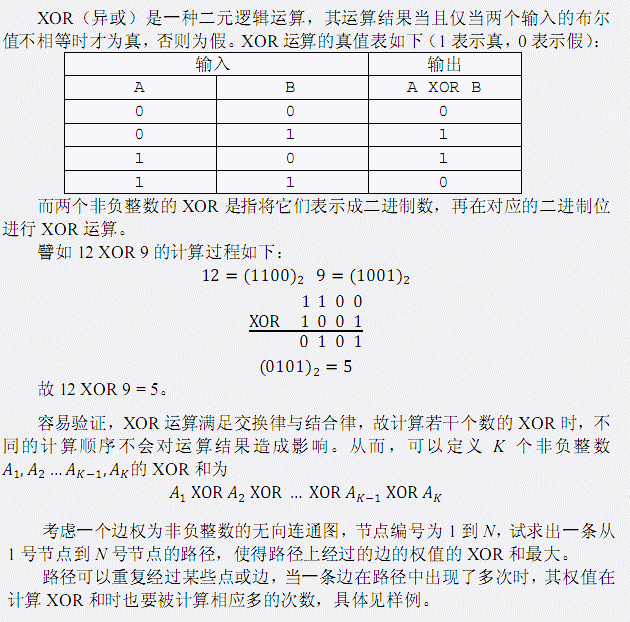
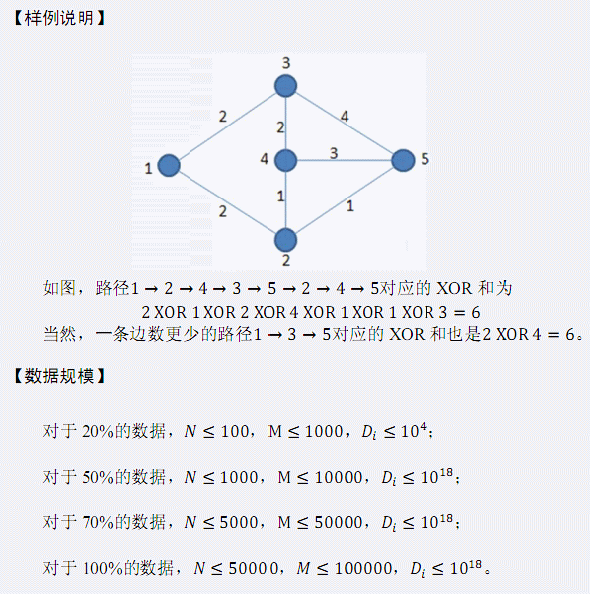

| F.A.Qs | Home | Discuss | ProblemSet | Status | Ranklist | Contest | 入门OJ | ModifyUser Xeonacid | Logout | 捐赠本站 |
|---|
| F.A.Qs | Home | Discuss | ProblemSet | Status | Ranklist | Contest | 入门OJ | ModifyUser Xeonacid | Logout | 捐赠本站 |
|---|

第一行包含两个整数N和 M， 表示该无向图中点的数目与边的数目。 接下来M 行描述 M 条边，每行三个整数Si，Ti ，Di，表示 Si 与Ti之间存在 一条权值为 Di的无向边。 图中可能有重边或自环。
仅包含一个整数，表示最大的XOR和（十进制结果）,注意输出后加换行回车。
